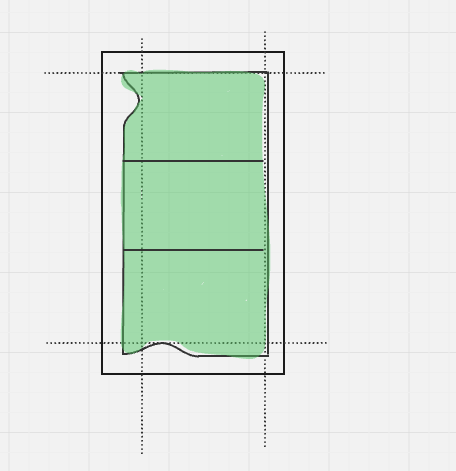

Project 1 Images of the Russian Empire
Image Border Cropping
My image cropping played a big role in the success of my image realignments. The first step in my cropping process is removing the white borders. I did this by looking around all four edges of the image independently. For each edge, I use a simple while loop to find the furthest white point moving inward toward the image on that edge. I only search toward the middle part of the image edges to avoid certain edge cases with the four corners.
After finding the most inward white point from each edge, I use those points as the reference for my cut. This process helped me remove the white edges entirely and be left with only the black borders. An illustration of this process is below, showing why this is useful.
Because my white cropping is very accurate, the images after this preprocessing step are already quite close, and only small adjustments are necessary to finalize the image. After removing the white border, I split the resulting image three ways for each color channel and crop off four percent of the image in terms of row length. For example, if my image is one hundred by thirty pixels, the row length is one hundred, so I crop four pixel columns from the left and right edges and four pixel rows from the top and bottom edges.
Part 1 Single Scale Implementation
For the single scale implementation, I realign the red and green channels by searching all possibilities for the row offset and column offset in a negative fifteen to fifteen pixel search space for each.
My method for judging how good a particular row and column offset realignment of a color channel is uses the L2 norm or Euclidean distance
sqrt(sum(sum((image1 - image2).^2))). A smaller L2 norm means the matrices of the two color channels align more closely, suggesting a good alignment of the images.
After finding the most optimal row and column offset realignment for both the green and red color channels while using the blue color channel as the fixed reference, I roll both of these matrices by their respective realignments. Finally, I stack these three channels together to create the full RGB image.
green offset (5, -3)
red offset (12, 3)
green offset (2, -3)
red offset (2, -2)
green offset (1, -3)
red offset (2, -3)
Part 2 Multiscale Pyramid Implementation
For Part 2, since the tif images are too computationally intensive to look in the same search space as Part 1 with many more pixels and larger matrices to compute, we need a better approach to searching.
I apply a pyramid implementation where at every function call to realign the images, I first scale down the image by some scale factor, which at the highest level in the call is just one, the original tif image. Then I make a recursive call to the same function except the scale factor is doubled, in order to find the optimal realignment for the image that is more granular with four times fewer pixels. After retrieving the optimal realignment found in the recursive call, I can apply the same realignment to the current images by doubling the realignment that the recursive call found to account for rows and columns doubling.
After applying the realignment to our color channel, I find the realignment between the reference image and the realigned color channel. This is useful because the search space of this current realignment is finer than the space of the recursive call. After finding the optimal row offset and column offset, I stack these offsets with the doubled offsets from our recursive call and return them.
At the highest level where our scale factor is one, I simply roll the image by the final row offset and column offset and return the realigned color channel. The base case of my function is at a scale factor of sixteen, where I do the normal realignment on the scaled images without making any recursive call and return these offsets.
In terms of the realignment computation done on each level, I realign the color channels by searching all possibilities for the row offset and column offset in order of increasing Manhattan distance from zero to fifteen. I then return the optimal row offset and column offset found within this search. I initially tried pruning the search for a better offset after two levels of the Manhattan distance search failed to produce better results. For example, if the search finds an initial L2 norm at a Manhattan distance of zero, finds a better one at one, better at two, but then worse at both three and four, I can prune the search from five to fifteen since we have likely already found the optimal offsets.
In practice, this pruning did not work well. It is possible for the search to find a steadily worse L2 norm from lengths zero to five at every step, but then increasingly better from five to ten, in which case we would have pruned and never returned the optimal solution.
My next approach to speeding up the code was changing my Manhattan distance search space to be from zero to two at the most fine levels of the pyramid with higher pixel counts, since these levels took the longest and I observed that the optimal offsets at these levels were consistently quite small and within this range. Therefore, the search from distances three to fifteen was wasted time. This took my processing time for each image from about one minute to about five seconds.
Just like in Part 1, after getting the rolled versions of both the green and red color channels, I stack them with the reference blue channel and output the result as my RGB image.

green offset (18, -4)
red offset (28, 4)

blue offset (-29, 24)
red offset (21, -17)

green offset (5, -16)
red offset (4, -13)
green offset (11, -17)
red offset (14, -23)

green offset (129, -21)
red offset (257, -35)

green offset (47, 2)
red offset (13, 9)

green offset (19, 16)
red offset (27, 29)

green offset (9, -10)
red offset (3, -13)

green offset (17, -29)
red offset (16, -37)

green offset (25, 6)
red offset (54, 25)

green offset (21, -14)
red offset (36, -11)